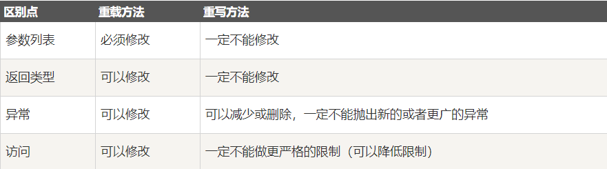

”https://www.runoob.com/java/java-data-structures.html”
class Animal{
public void move(){
System.out.println("动物可以移动");
}
}
class Dog extends Animal{
public void move(){
System.out.println("狗可以跑和走");
}
public void bark(){
System.out.println("狗可以吠叫");
}
}
public class TestDog{
public static void main(String args[]){
Animal a = new Animal(); // Animal 对象
Animal b = new Dog(); // Dog 对象
a.move();// 执行 Animal 类的方法
b.move();//执行 Dog 类的方法
b.bark();
}
}TestDog.java:30: cannot find symbol
symbol : method bark()
location: class Animal
b.bark();
^b的引用类型Animal没有bark方法，所以编译错误。

要调用父类中被重写的方法，则必须使用super
重写（重写和重载）
接口
抽象类和抽象方法
抽象类可以不用包含抽象方法。但如果一个类包含抽象方法，那么该类必须是抽象类。
任何子类必须重写父类的抽象方法，或者声明自身为抽象类。
构造方法、类方法（用static修饰的方法）不能声明为抽象方法。
抽象类的子类必须给出抽象类中的抽象方法的具体实现，除非该子类也是抽象类。
良好的封装能够减少耦合。
类内部的结构可以自由修改。
可以对成员变量进行更精确的控制。
隐藏信息，实现细节。
封装中采用 this 关键字是为了解决实例变量（private String name）和局部变量（setName(String name)中的name变量）之间发生的同名的冲突。
接口无法被实例化，但是可以被实现。
一个实现接口的类，必须实现接口内所描述的所有方法，否则就必须声明为抽象类。
在 Java 中，接口类型可用来声明一个变量，他们可以成为一个空指针，或是被绑定在一个以此接口实现的对象。
接口不能用于实例化对象。
接口没有构造方法。
接口中所有的方法必须是抽象方法。
接口不能包含成员变量，除了 static 和 final 变量。
接口不是被类继承了，而是要被类实现。
接口支持多继承。
接口中每一个方法也是隐式抽象的,接口中的方法会被隐式的指定为 public abstract（只能是 public abstract，其他修饰符都会报错）。
接口中可以含有变量，但是接口中的变量会被隐式的指定为 public static final 变量（并且只能是 public，用 private 修饰会报编译错误）。
接口中的方法是不能在接口中实现的，只能由实现接口的类来实现接口中的方法。
接口中的方法都是公有的。
一个接口能继承另一个接口。
抽象类中的方法可以有方法体，就是能实现方法的具体功能，但是接口中的方法不行。（JDK 1.8 以后，接口里可以有静态方法和方法体了。）
抽象类中的成员变量可以是各种类型的，而接口中的成员变量只能是 public static final 类型的。
接口中不能含有静态代码块以及静态方法(用 static 修饰的方法)，而抽象类是可以有静态代码块和静态方法。
一个类只能继承一个抽象类，而一个类却可以实现多个接口。
最常用的继承接口是没有包含任何方法的接口。
标记接口是没有任何方法和属性的接口.它仅仅表明它的类属于一个特定的类型,供其他代码来测试允许做一些事情。
标记接口作用：简单形象的说就是给某个对象打个标（盖个戳），使对象拥有某个或某些特权。
如果在一个包中，一个类想要使用本包中的另一个类，那么该包名可以省略。
通常，一个公司使用它互联网域名的颠倒形式来作为它的包名.例如：互联网域名是 bobozz.cn，所有的包名都以 cn.bobozz 开头。包名中的每一个部分对应一个子目录。